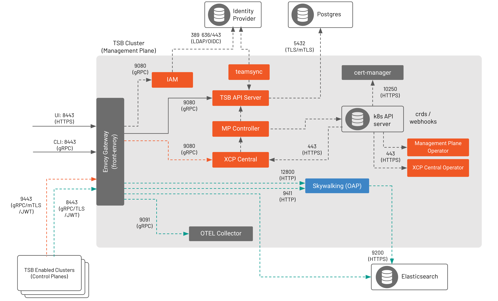

TSB 组件
本页面将详细解释 TSB 组件和你必须提供和连接以运行 TSB 的外部依赖项。
在继续之前，请确保你已经：
查看了 TSB 架构 并理解了 TSB 的四个层次：数据平面（Envoy 代理）、本地控制平面（Istio）、全局控制平面（XCP）和管理平面（TSB 本身）。
管理平面
下图显示了管理平面（MP）组件：

front-envoy 端口
默认 Envoy 网关（或前置 Envoy）端口是 8443，可以由用户配置（例如更改为 443）。如果更改了默认端口，则通过前置 Envoy 进行通信的组件需要相应地进行调整以匹配用户定义的值。
front-envoy 作为 Elasticsearch 代理
TSB 的前置 Envoy 可以作为配置在
ManagementPlane CR 中的 Elasticsearch 的代理。
要使用此功能，请在 ControlPlane CR 中将 Elastic 主机和端口设置为 TSB 前置 Envoy 主机和端口。然后，来自控制平面 OAP 到 Elasticsearch 的流量将通过前置 Envoy 进行传递。
在管理平面中有两个运行的 Operator，用于管理 TSB 组件的生命周期：
| Operator 名称 | 描述 |
|---|---|
| TSB 管理平面 Operator | 用于管理管理平面中 TSB 组件生命周期的 Operator。 |
| XCP Central Operator | 用于管理 XCP Central 的生命周期的 Operator。TSB 管理平面 Operator 部署 XCP Operator 和该 Operator 的 CRD，将 XCP Central 的管理交给它们。 |
以下是管理平面组件。有关更多参考，请查看 管理平面安装 API。
| 组件名称 | 描述 |
|---|---|
| Envoy Gateway（front-envoy） | 为 TSB API 和 UI 提供单一入口点。 |
| IAM | 前置 Envoy 的外部授权。IAM 决定是否允许或拒绝对 TSB API 的传入请求。 |
| TSB API Server | TSB 的核心。存储将被发送到控制平面的配置。使用 NGAC 进行访问决策。将 PostgreSQL 用作后端存储。 |
| Web UI | 提供 UI 组件。具有帮助连接到各种 TSB 组件（API 服务器、OAP）的 BFF（前端后端）。 |
| MPC（MP Controller） | 在 TSB API 和 XCP Central 之间提供双向配置和集群状态同步。 |
| XCP Central | 协调多集群发现。将配置发送到所有连接的在集群中运行的 XCP Edge。接收来自 XCP Edge 的集群状态和配置状态更新。此组件由 XCP Central Operator 管理。 |
| OAP（SkyWalking） | 用于 UI 查询以从所有集群的 OAP 获取聚合指标和跟踪。使用 Elasticsearch 作为后端存储。 |
| OTEL Collector | 从管理平面中的不同组件中收集指标。从每个控制平面的 OpenTelemetry（OTEL）收集器接收指标。请注意，OTEL 收集器严格用于 TSB 组件监视，而不是你的应用程序。 |
| teamsync | 使用 LDAP 和 Azure AD 作为 IdP 时创建。从 IdP 检索用户和组并将其同步到 TSB 存储中。 |
| cert-manager | 使用 INTERNAL cert-manager 时创建。cert-manager 为内部 TSB 组件提供证书，例如 Webhook 证书等的目的。 |
控制平面
下图显示了控制平面（CP）组件以及数据平面（DP）。

有四个 Operator 运行在控制平面中，用于管理 TSB 组件的生命周期：
| Operator 名称 | 描述 |
|---|---|
| TSB Control Plane Operator | 用于管理控制平面中 TSB 控制平面组件生命周期的 Operator。 |
| XCP Edge Operator | 用于管理 XCP Edge 的生命周期的 Operator。TSB 控制平面 Operator 部署 XCP Operator 和该 Operator 的 CRD，将 XCP Edge 的管理交给它们。 |
| Istio Operator | 用于管理 Istio 控制平面的生命周期的 Operator。TSB 控制平面 Operator 部署 Istio Operator 和该 Operator 的 CRD，将 Istio 组件的管理交给它们。 |
| Onboarding Operator | 用于管理所需组件的生命周期，以将 VM 工作负载（也称为网格扩展）纳入网格。 |
修订的控制平面
TSB 1.5 引入了修订的控制平面。当你使用修订的控制平面时，由 XCP Edge Operator 部署 Istio Operator，而不是 TSB 控制平面 Operator。要了解有关修订的控制平面的更多信息，请转到 Istio 隔离边界。
以下是控制平面组件。有关更多参考，请查看 控制平面安装 API。
| 组件名称 | 描述 |
|---|---|
| XCP edge | 接收来自 XCP Central 的配置并将其转化为 Istio 配置。向 XCP Central 发送关于配置状态和集群清单的更新。由 XCP Edge Operator 管理。 |
| Istiod | 提供服务发现、将配置分发到 Envoy 代理以及工作负载证书管理的 Istio 组件。由 Istio Operator 管理。 |
| OAP（SkyWalking） | 接收来自集群中所有 Istio sidecar 和网关的访问日志和跟踪。处理这些访问日志并生成指标。指标和跟踪将被发送到 Elasticsearch。 |
| OTEL Collector | 从控制平面中的不同 TSB 组件中收集指标。将指标导出到同一 pod 中的 Prometheus 导出器以及通过前置 Envoy 到管理平面的 OTEL 收集器。请注意，OTEL 收集器严格用于 TSB 组件监视，而不是你的应用程序。 |
| SkyWalking HPA | 提供外部指标适配器，Kubernetes 水平 Pod 自动缩放（HPA）控制器可以从中检索指标。 |
| 速率限制服务器 | 提供内建的速率限制功能的可选组件。 |
| VM Gateway | 在启用网格扩展时部署。VM 网关提供与在 VM 中运行的 sidecar 的 Istiod 和 OAP 的连接。 |
| Onboarding Plane | 在启用网格扩展时部署。VM 中的 Onboarding 代理将连接到此组件，以便将外部网格工作负载（例如在 VM 中运行的工作负载）纳入网格。 |
| Onboarding Repository | 在启用网格扩展时部署。一个 HTTP 服务器，提供登记代理和 Istio Sidecar 的 DEB 和 RPM 包。 |
| cert-manager | 使用 INTERNAL cert-manager 时创建。cert-manager 为内部 TSB 组件提供证书，例如 Webhook 证书等的目的。 |
数据平面
修订的控制平面
TSB 1.5 引入了修订的控制平面。当你使用修订的控制平面时，不再需要 Data Plane Operator 来管理 Istio 网关。要了解有关修订的控制平面的更多信息，请转到 Istio 隔离边界。
在数据平面中有两个运行的 Operator，用于管理网关部署的生命周期：
| Operator 名称 | 描述 |
|---|---|
| TSB Data Plane Operator | 用于管理 TSB 数据平面组件生命周期的 Operator。 |
| Istio Operator | 根据 数据平面安装 API 中指定的 Gateway CR 来管理 Istio 网关的生命周期的 Operator。 |